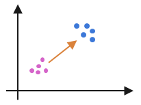

 L1000 CD Signatures
Gene expression signatures calculated from the LINCS L1000 dataset using the characteristic direction method
Installation
1. Install MongoDB.
2. Download the LINCS_L1000_CD.tar.gz file and unzip.
3. Place all the LINCS_L1000_CD.x files in the unzipped folder into the MongoDB database folder.
4. Start mongod.
5. Open a mongo shell and switch to LINCS_L1000_CD db. The LINCScloud collection in the db stores all the processed LINCS L1000 data download from LINCS cloud. The GSE70138 collection contains all the processed LINCS L1000 data downlaoded from GEO. The two collections do not overlap.
6. Optionally it is suggested to download and install Robomongo which provides a nice GUI to browse the data.
6. Refer to the MongoDB documentation for query specifications and drivers for different languages.
Genes' Meta-data
LINCSCloudRid.json is an array of probe IDs matching the order of the genes in chdirFull in LINCScloud collection. The order of landmark genes in in this array matches that of landmark genes in chdirLm.
GSE70138Rid.json is an array of probe IDs matching the order of the genes in chdirFull in GSE70138 collection. The order of landmark genes in in this array matches that of landmark genes in chdirLm.
metaMap.json contains the metadata of the probe IDs. It can be used to convert probe IDs into gene symbols and determine if a probe ID is a landmark gene.
Signatures
LINCS_L1000_CD.x MongoDB files can be downloaded here:Schema
| batch | String | A batch is a group of experiments measured on the same plates. |
| cell_id | String | Cell-line name |
| chdirFull | Array | The full characteristic direction consisting of values of 22,268 genes. |
| chdirLm | Array | The landmark characteristic direction consisting of values of 978 landmark genes. |
| chdirMeanDistLm | Number | Average cosine distance calculated the using landmark genes which is the test statistic to assess the significance of a signature and has a range of [0,2]. |
| dnGenes | Array | An array of significantly down-regulated genes in Entrez gene symbols. |
| pert_desc | String | The name of the chemical perturbation. |
| pert_dose | Number,String | The dose of the perturbation. It is a number in GSE70138 collection and a string in LINCScloud collection. |
| pert_dose_unit | String | The unit of the perturbation dose. |
| pert_id | String | The Broad ID of an perturbation. |
| pert_time | Number, String | How long the perturbation has been applied.It is a number in GSE70138 collection and a string in LINCScloud collection. |
| pert_time_unit | String | The unit of pert_time. |
| pert_type | String | The type of the perturbation. |
| pvalue | Number | The significance of a signature. |
| replicateCount | Number | The number of replicates from which the signature is calculated |
| sigIdx | Array | The index of the significant up genes and down genes in chdirFull. Notice that the index is one based! |
| sig_id | String | The unqiue identifier of a signature. |
| upGenes | Array | An arry of significantly up-regulated genes in Entrez gene symbols. |
Contact
Please contact Avi Ma’ayan and Qiaonan Duan for comments, suggestions, and support: avi.maayan@mssm.edu, qiaonan.duan@mssm.edu.